<title>Konsepto Case Study</title>
<meta name="claude:viewport-fit-sides" content="cover">
<link rel="preconnect" href="https://fonts.googleapis.com">
<link rel="preconnect" href="https://fonts.gstatic.com" crossorigin>
<link rel="stylesheet" href="https://fonts.googleapis.com/css2?family=Bricolage+Grotesque:opsz,wdth,wght@12..96,75..100,400..800&family=Manrope:wght@400..800&family=JetBrains+Mono:wght@400;500&display=swap">
<style>
/* Layout: an editorial case study. Cool studio-paper pages, the app's dark screens set in device frames
   as the heroes, big grotesk headlines, feature spreads alternating image and text. */
:root {
  --paper: #eceef2;
  --paper-2: #e2e5eb;
  --card: #f7f8fa;
  --ink: #0b0e15;
  --ink-2: #3b4252;
  --muted: #6b7386;
  --line: rgba(11, 14, 21, 0.12);
  --orange: #ff6a1f;
  --orange-ink: #c2410c;
  --night: #06080d;
  --night-ink: #f1f3f7;
  --night-muted: #8d95a7;
  --shadow: 0 40px 80px -30px rgba(11, 14, 21, 0.45), 0 12px 24px -12px rgba(11, 14, 21, 0.25);

  --f-display: "Bricolage Grotesque", "Arial Narrow", system-ui, sans-serif;
  --f-body: "Manrope", system-ui, -apple-system, "Segoe UI", sans-serif;
  --f-mono: "JetBrains Mono", ui-monospace, Consolas, monospace;
  --ease: cubic-bezier(0.2, 0.7, 0.2, 1);
}
@media (prefers-color-scheme: dark) {
  :root:not([data-theme="light"]) {
    --paper: #0c0f16; --paper-2: #121722; --card: #151b27; --ink: #f1f3f7; --ink-2: #c3c9d6; --muted: #8d95a7;
    --line: rgba(241, 243, 247, 0.12); --orange-ink: #ff8a3d;
    --shadow: 0 40px 80px -30px rgba(0, 0, 0, 0.8), 0 12px 24px -12px rgba(0, 0, 0, 0.6);
    color-scheme: dark;
  }
}
:root[data-theme="dark"] {
  --paper: #0c0f16; --paper-2: #121722; --card: #151b27; --ink: #f1f3f7; --ink-2: #c3c9d6; --muted: #8d95a7;
  --line: rgba(241, 243, 247, 0.12); --orange-ink: #ff8a3d;
  --shadow: 0 40px 80px -30px rgba(0, 0, 0, 0.8), 0 12px 24px -12px rgba(0, 0, 0, 0.6);
  color-scheme: dark;
}
* { box-sizing: border-box; }
html { background: var(--paper); }
body { background: var(--paper); color: var(--ink); font-family: var(--f-body); font-size: 16px; line-height: 1.6; -webkit-font-smoothing: antialiased; }
h1, h2, h3, h4, p, figure { margin: 0; }
h1, h2, h3 { text-wrap: balance; }
img { display: block; max-width: 100%; height: auto; }
button { font: inherit; color: inherit; }
:focus-visible { outline: 2px solid var(--orange); outline-offset: 3px; border-radius: 6px; }

.wrap { max-width: 1320px; margin: 0 auto; padding-left: max(16px, env(safe-area-inset-left, 0px)); padding-right: max(16px, env(safe-area-inset-right, 0px)); }
@media (min-width: 760px) { .wrap { padding-left: max(48px, env(safe-area-inset-left, 0px)); padding-right: max(48px, env(safe-area-inset-right, 0px)); } }
.label { font-family: var(--f-mono); font-size: 11px; letter-spacing: 0.14em; text-transform: uppercase; color: var(--muted); }
.num { font-variant-numeric: tabular-nums; }
.mark { display: inline-flex; align-items: center; gap: 10px; font-weight: 800; letter-spacing: -0.02em; }
.mark i { width: 30px; height: 30px; border-radius: 9px; background: var(--night); display: grid; place-items: center; }

/* ---------- nav ---------- */
.nav .wrap { display: flex; justify-content: space-between; align-items: center; gap: 16px; padding-block: 22px; flex-wrap: wrap; }
.nav nav { display: flex; gap: 22px; flex-wrap: wrap; }
.nav nav a { color: var(--ink-2); text-decoration: none; font-size: 14px; font-weight: 600; }
.nav nav a:hover { color: var(--orange-ink); }

/* ---------- hero ---------- */
.hero .wrap { padding-block: clamp(24px, 5vw, 64px) 0; display: grid; gap: clamp(28px, 4vw, 48px); }
.hero-top { display: grid; gap: 24px; align-items: end; }
@media (min-width: 980px) { .hero-top { grid-template-columns: 1fr 360px; } }
.hero h1 { font-family: var(--f-display); font-weight: 800; font-variation-settings: "wdth" 80, "opsz" 96; font-size: clamp(64px, 15vw, 232px); line-height: 0.8; letter-spacing: -0.055em; }
.hero h1 span { color: var(--orange); }
.hero-lede { display: grid; gap: 18px; padding-bottom: 10px; }
.hero-lede p { font-size: 19px; line-height: 1.45; color: var(--ink-2); max-width: 32ch; }
.hero-lede strong { color: var(--ink); }
.meta { display: grid; grid-template-columns: repeat(auto-fit, minmax(160px, 1fr)); border-top: 1px solid var(--line); }
.meta div { padding: 16px 16px 16px 0; display: grid; gap: 4px; }
.meta b { font-weight: 700; font-size: 15px; }

.stage { position: relative; padding-bottom: clamp(40px, 8vw, 110px); }
.browser { border-radius: 14px; overflow: hidden; background: var(--night); box-shadow: var(--shadow); border: 1px solid rgba(255,255,255,.06); }
.browser .bar { height: 34px; display: flex; align-items: center; gap: 7px; padding: 0 14px; background: #10141d; border-bottom: 1px solid rgba(255,255,255,.06); }
.browser .bar i { width: 10px; height: 10px; border-radius: 50%; background: #2a3140; }
.browser .bar span { margin-left: 12px; font-family: var(--f-mono); font-size: 11px; color: var(--night-muted); background: #0a0d14; padding: 3px 12px; border-radius: 6px; overflow: hidden; white-space: nowrap; text-overflow: ellipsis; min-width: 0; }
.phone { width: clamp(150px, 22vw, 290px); border-radius: clamp(26px, 3.6vw, 44px); padding: clamp(6px, .8vw, 10px); background: #050608; box-shadow: var(--shadow), inset 0 0 0 1.5px #2a2f3a; }
.phone img { border-radius: clamp(20px, 2.9vw, 35px); }
.hero .phone { position: absolute; right: clamp(-4px, 2vw, 40px); bottom: 0; }
@media (max-width: 640px) { .hero .phone { width: 128px; right: 4px; } }

/* ---------- stats ---------- */
.stats { background: var(--night); color: var(--night-ink); }
.stats .wrap { display: grid; grid-template-columns: repeat(auto-fit, minmax(150px, 1fr)); padding-block: 36px; gap: 24px; }
.stats div { display: grid; gap: 2px; }
.stats b { font-family: var(--f-display); font-weight: 700; font-variation-settings: "wdth" 80, "opsz" 96; font-size: clamp(44px, 5vw, 64px); line-height: 1; letter-spacing: -0.04em; }
.stats b em { font-style: normal; color: var(--orange); }
.stats .label { color: var(--night-muted); }

/* ---------- sections ---------- */
section.block .wrap { padding-block: clamp(72px, 10vw, 140px); }
.kicker { display: flex; align-items: center; gap: 14px; margin-bottom: 22px; }
.kicker::before { content: ""; width: 28px; height: 2px; background: var(--orange); }
.h2 { font-family: var(--f-display); font-weight: 700; font-variation-settings: "wdth" 85, "opsz" 72; font-size: clamp(38px, 5.6vw, 80px); line-height: 0.95; letter-spacing: -0.04em; max-width: 16ch; }
.lead { font-size: 18px; color: var(--ink-2); max-width: 58ch; }

.two { display: grid; gap: 40px; margin-top: 56px; }
@media (min-width: 900px) { .two { grid-template-columns: 1fr 1fr; gap: 64px; } }
.two article { display: grid; gap: 14px; align-content: start; border-top: 1px solid var(--line); padding-top: 22px; }
.two h3 { font-family: var(--f-display); font-weight: 700; font-size: 26px; letter-spacing: -0.02em; }
.two p { color: var(--ink-2); }
.two ul { margin: 0; padding: 0; list-style: none; display: grid; gap: 10px; }
.two li { display: grid; grid-template-columns: 22px 1fr; color: var(--ink-2); }
.two li::before { content: "—"; color: var(--orange-ink); }

/* feature spread */
.feature { display: grid; gap: clamp(28px, 4vw, 56px); align-items: center; }
.feature + .feature { margin-top: clamp(80px, 11vw, 150px); }
@media (min-width: 980px) {
  .feature { grid-template-columns: minmax(0, 1.55fr) minmax(0, 1fr); }
  .feature.flip { grid-template-columns: minmax(0, 1fr) minmax(0, 1.55fr); }
  .feature.flip .copy { order: -1; }
}
.copy { display: grid; gap: 18px; align-content: center; min-width: 0; }
.copy .tag { font-family: var(--f-mono); font-size: 12px; color: var(--orange-ink); letter-spacing: .04em; }
.copy h3 { font-family: var(--f-display); font-weight: 700; font-variation-settings: "wdth" 85, "opsz" 60; font-size: clamp(30px, 3.4vw, 46px); line-height: 1; letter-spacing: -0.035em; }
.copy p { color: var(--ink-2); max-width: 46ch; }
.chips { display: flex; flex-wrap: wrap; gap: 8px; }
.chips span { font-size: 12px; font-weight: 600; padding: 6px 12px; border-radius: 999px; border: 1px solid var(--line); color: var(--ink-2); background: var(--card); }
.shot { border-radius: 14px; overflow: hidden; box-shadow: var(--shadow); background: var(--night); }
.crop { border-radius: 14px; overflow: hidden; box-shadow: var(--shadow); aspect-ratio: 4 / 3; max-width: 100%; background: var(--night); }
.crop img { width: 100%; height: 100%; object-fit: cover; }
.crop.right img { object-position: 100% 0; }

.parts-strip { display: grid; grid-template-columns: repeat(auto-fill, minmax(120px, 1fr)); gap: 12px; margin-top: 36px; }
.parts-strip figure { background: #fff; border-radius: 14px; aspect-ratio: 1; max-width: 100%; display: grid; place-items: center; padding: 14px; position: relative; border: 1px solid var(--line); }
.parts-strip img { max-height: 100%; width: auto; object-fit: contain; mix-blend-mode: multiply; }
.parts-strip figcaption { position: absolute; left: 10px; bottom: 8px; font-family: var(--f-mono); font-size: 9.5px; letter-spacing: .08em; text-transform: uppercase; color: #6b7386; }

/* three builds switcher */
.builds { background: var(--paper-2); }
.switch-head { display: flex; justify-content: space-between; align-items: end; gap: 24px; flex-wrap: wrap; margin-bottom: 36px; }
.seg { display: inline-flex; gap: 4px; padding: 5px; border-radius: 999px; background: var(--card); border: 1px solid var(--line); flex-wrap: wrap; }
.seg button { border: 0; background: transparent; padding: 9px 16px 9px 12px; border-radius: 999px; font-weight: 700; font-size: 13px; cursor: pointer; display: inline-flex; align-items: center; gap: 8px; color: var(--ink-2); transition: background-color .15s, color .15s; }
.seg button i { width: 14px; height: 14px; border-radius: 50%; box-shadow: inset 0 0 0 1px rgba(0,0,0,.2); }
.seg button[aria-selected="true"] { background: var(--ink); color: var(--paper); }
.viewer { position: relative; border-radius: 16px; overflow: hidden; box-shadow: var(--shadow); background: var(--night); aspect-ratio: 16 / 9; max-width: 100%; }
.viewer img { position: absolute; inset: 0; width: 100%; height: 100%; object-fit: cover; transition: opacity .5s var(--ease); }
.viewer img[data-off] { opacity: 0; }
.viewer-cap { display: flex; justify-content: space-between; gap: 12px; margin-top: 14px; flex-wrap: wrap; }

/* flow */
.flow { display: grid; grid-template-columns: repeat(auto-fit, minmax(190px, 1fr)); gap: 0; margin-top: 56px; border-top: 1px solid var(--line); }
.step { padding: 26px 22px 26px 0; display: grid; gap: 12px; align-content: start; position: relative; }
.step + .step { padding-left: 22px; border-left: 1px solid var(--line); }
@media (max-width: 640px) { .step + .step { border-left: 0; padding-left: 0; border-top: 1px solid var(--line); } }
.step .n { font-family: var(--f-display); font-weight: 700; font-size: 44px; line-height: 1; letter-spacing: -0.04em; color: var(--orange); font-variation-settings: "wdth" 80; }
.step h4 { font-size: 17px; font-weight: 800; letter-spacing: -0.01em; }
.step p { font-size: 14px; color: var(--muted); }
.step code { font-family: var(--f-mono); font-size: 12px; color: var(--ink-2); }

/* accuracy (dark spread) */
.accuracy { background: var(--night); color: var(--night-ink); }
.accuracy .h2 { color: var(--night-ink); }
.accuracy .lead { color: #c3c9d6; }
.acc-grid { display: grid; gap: 40px; margin-top: 56px; align-items: center; }
@media (min-width: 980px) { .acc-grid { grid-template-columns: 1.3fr 1fr; gap: 64px; } }
.acc-fig { position: relative; }
.acc-fig svg.dims { position: absolute; inset: 0; width: 100%; height: 100%; pointer-events: none; }
.spec-table { display: grid; }
.spec-table div { display: flex; justify-content: space-between; gap: 16px; padding: 14px 0; border-bottom: 1px solid rgba(241,243,247,.1); }
.spec-table div:first-child { border-top: 1px solid rgba(241,243,247,.1); }
.spec-table span { color: var(--night-muted); font-size: 14px; }
.spec-table b { font-family: var(--f-mono); font-weight: 500; font-size: 14px; }
.method { margin-top: 28px; display: grid; gap: 14px; }
.method p { color: #c3c9d6; font-size: 14px; }

/* mobile */
.phones { display: flex; gap: clamp(16px, 3vw, 40px); justify-content: center; align-items: flex-end; flex-wrap: wrap; }
.phones .phone:nth-child(2) { transform: translateY(-40px); }
@media (max-width: 640px) { .phones .phone { width: 46%; } .phones .phone:nth-child(2) { transform: none; } }

/* ui kit */
.kit { display: grid; gap: 16px; margin-top: 56px; grid-template-columns: repeat(auto-fit, minmax(260px, 1fr)); }
.kit > div { background: var(--card); border: 1px solid var(--line); border-radius: 18px; padding: 24px; display: grid; gap: 16px; align-content: start; }
.kit h4 { font-size: 15px; font-weight: 800; }
.sw { display: grid; grid-template-columns: repeat(5, 1fr); gap: 8px; }
.sw span { aspect-ratio: 1; max-width: 100%; border-radius: 12px; border: 1px solid var(--line); }
.sw-names { display: grid; grid-template-columns: repeat(5, 1fr); gap: 8px; font-family: var(--f-mono); font-size: 9.5px; color: var(--muted); }
.typeline { font-size: 44px; font-weight: 800; letter-spacing: -0.04em; line-height: 1; }
.night-kit { background: var(--night) !important; color: var(--night-ink); border-color: transparent !important; }
.night-kit .label { color: var(--night-muted); }
.pillbar { display: flex; gap: 2px; padding: 5px; border-radius: 999px; background: rgba(16,20,30,.7); border: 1px solid rgba(255,255,255,.12); width: max-content; max-width: 100%; }
.pillbar span { padding: 7px 13px; border-radius: 999px; font-size: 12px; font-weight: 600; color: #cdd2de; }
.pillbar span.on { background: #f1f3f7; color: #06080d; }
.btns { display: flex; gap: 8px; flex-wrap: wrap; }
.btns span { padding: 10px 18px; border-radius: 999px; font-weight: 700; font-size: 13px; }

/* next + credits */
.next { display: grid; gap: 16px; margin-top: 48px; grid-template-columns: repeat(auto-fit, minmax(240px, 1fr)); }
.next article { border: 1px solid var(--line); border-radius: 18px; padding: 24px; display: grid; gap: 10px; background: var(--card); }
.next h4 { font-family: var(--f-display); font-weight: 700; font-size: 22px; letter-spacing: -0.02em; }
.next p { color: var(--muted); font-size: 14px; }
.thanks .wrap { padding-block: clamp(72px, 10vw, 140px) 40px; display: grid; gap: 48px; }
.thanks h2 { font-family: var(--f-display); font-weight: 800; font-variation-settings: "wdth" 78, "opsz" 96; font-size: clamp(56px, 12vw, 190px); line-height: .82; letter-spacing: -0.055em; }
.thanks h2 span { color: var(--orange); }
.credits { display: flex; justify-content: space-between; gap: 16px 32px; flex-wrap: wrap; border-top: 1px solid var(--line); padding-top: 18px; }

@media (prefers-reduced-motion: reduce) { .viewer img { transition: none; } }
</style>

<header class="nav">
  <div class="wrap">
    <span class="mark"><i><svg width="18" height="18" viewBox="0 0 24 24" fill="none" aria-hidden="true"><circle cx="12" cy="12" r="8.5" stroke="#f1f3f7" stroke-width="1.7"/><circle cx="12" cy="12" r="2.2" fill="#f1f3f7"/><path d="M3.5 15.5C6 21 15 22 20.5 14" stroke="#ff6a1f" stroke-width="2.2" stroke-linecap="round"/></svg></i>Konsepto</span>
    <nav aria-label="Sections"><a href="#overview">Overview</a><a href="#features">Features</a><a href="#flow">Flow</a><a href="#accuracy">Accuracy</a><a href="#mobile">Mobile</a></nav>
  </div>
</header>

<main>
  <!-- HERO -->
  <section class="hero">
    <div class="wrap">
      <div class="hero-top">
        <h1>Konsepto<span>.</span></h1>
        <div class="hero-lede">
          <span class="label">Case study · 3D web app · 2026</span>
          <p><strong>Dress your motorcycle in 3D.</strong> A garage for Philippine scooters where riders paint the bike and fit real aftermarket parts before they spend a peso.</p>
        </div>
      </div>
      <div class="meta">
        <div><span class="label">Role</span><b>Design &amp; development</b></div>
        <div><span class="label">Designer</span><b>Dale</b></div>
        <div><span class="label">Platform</span><b>Web · desktop + phone</b></div>
        <div><span class="label">Built with</span><b>React · three.js</b></div>
      </div>
      <div class="stage">
        <div class="browser">
          <div class="bar"><i></i><i></i><i></i><span>konsepto · Honda Click 125 V3 · Stellar Blue Metallic</span></div>
          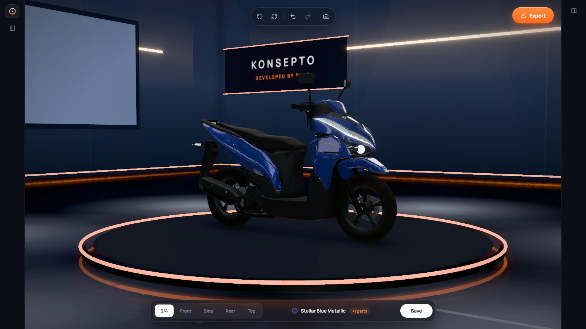
        </div>
        <div class="phone">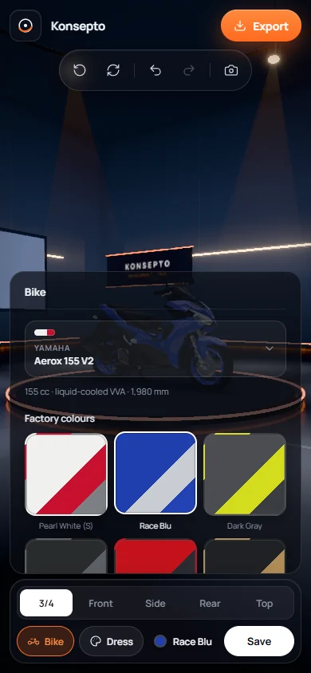</div>
      </div>
    </div>
  </section>

  <!-- STATS -->
  <section class="stats" aria-label="Konsepto in numbers">
    <div class="wrap num">
      <div><b>2</b><span class="label">Bikes in the garage</span></div>
      <div><b>13</b><span class="label">Factory PH paints</span></div>
      <div><b>130<em>+</em></b><span class="label">Aftermarket parts</span></div>
      <div><b>26</b><span class="label">Part slots on the Click</span></div>
      <div><b>1<em>mm</em></b><span class="label">Measured accuracy</span></div>
    </div>
  </section>

  <!-- OVERVIEW -->
  <section class="block" id="overview">
    <div class="wrap">
      <div class="kicker"><span class="label">Overview</span></div>
      <h2 class="h2">Every build starts as a konsepto.</h2>
      <div class="two">
        <article>
          <span class="label">The problem</span>
          <h3>Builds are planned from screenshots</h3>
          <p>Scooter riders in the Philippines plan their builds for months. They save photos from Facebook groups, ask shops for quotes, and try to picture a Brembo caliper or a Mutarru CVT cover on their own bike. Nothing shows the whole build at once, in their colour, at the right size.</p>
        </article>
        <article>
          <span class="label">The answer</span>
          <h3>A 3D garage with real parts</h3>
          <ul>
            <li>The bikes riders own, rebuilt to the millimetre from real photos and spec sheets.</li>
            <li>The official PH paint schemes, plus any custom colour on any panel.</li>
            <li>Real aftermarket parts from the brands sold in PH shops, fitted on the bike.</li>
            <li>Builds saved on the device and exported as a picture to share.</li>
          </ul>
        </article>
      </div>
    </div>
  </section>

  <!-- FEATURES -->
  <section class="block" id="features" style="padding-top:0">
    <div class="wrap" style="padding-top:0">
      <div class="kicker"><span class="label">Features</span></div>
      <h2 class="h2" style="margin-bottom: clamp(48px, 7vw, 96px)">A showroom you can take apart.</h2>

      <div class="feature">
        <figure class="shot">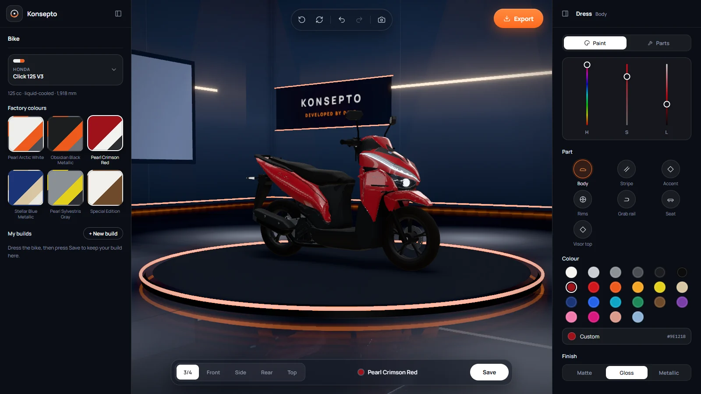</figure>
        <div class="copy">
          <span class="tag">01 · Paint</span>
          <h3>Factory colours, or your own.</h3>
          <p>Start from the bike's official PH paints, like Pearl Crimson Red or Stellar Blue Metallic. Then colour each panel on its own with the hue, saturation and brightness sliders and pick a matte, gloss or metallic finish.</p>
          <div class="chips"><span>Body</span><span>Stripe</span><span>Accent</span><span>Rims</span><span>Grab rail</span><span>Seat</span><span>Visor top</span></div>
        </div>
      </div>

      <div class="feature flip">
        <figure class="shot">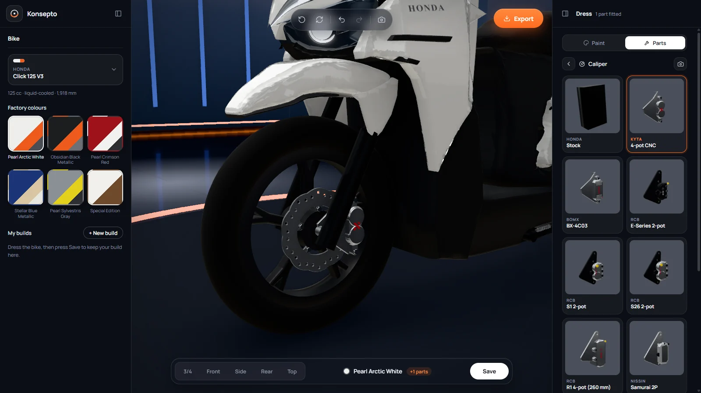</figure>
        <div class="copy">
          <span class="tag">02 · Parts</span>
          <h3>Pick a slot, the camera follows.</h3>
          <p>Parts are grouped the way riders talk about the bike: front, wheels, left side, right side, body, tindig and decals. Open a slot and the camera glides to it, anything in the way steps aside, and each option shows on the bike as you tap it.</p>
          <div class="chips"><span>Calipers</span><span>Discs</span><span>Mags</span><span>CVT covers</span><span>Pipes</span><span>Shocks</span><span>Decal kits</span></div>
        </div>
      </div>
      <div class="parts-strip">
        <figure>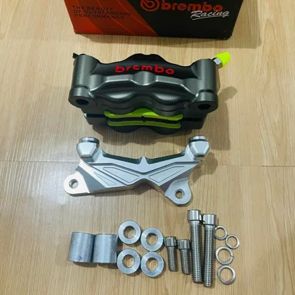<figcaption>Brembo GP4</figcaption></figure>
        <figure>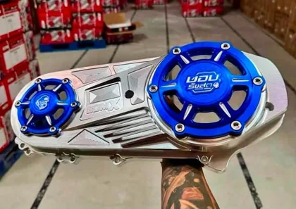<figcaption>BOMX CVT</figcaption></figure>
        <figure>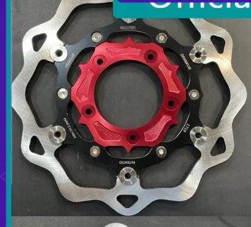<figcaption>Wave disc</figcaption></figure>
        <figure>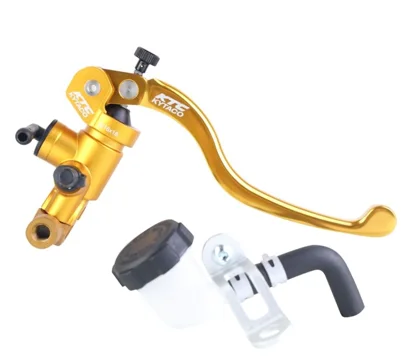<figcaption>KYTA master</figcaption></figure>
        <figure>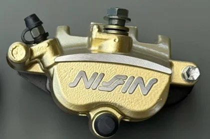<figcaption>Nissin Samurai</figcaption></figure>
        <figure>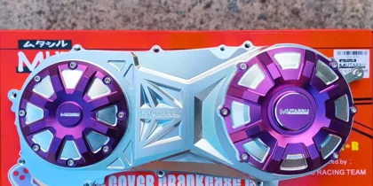<figcaption>Mutarru CVT</figcaption></figure>
        <figure>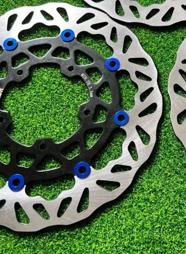<figcaption>RKR disc</figcaption></figure>
        <figure>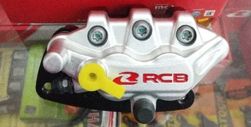<figcaption>RCB S1</figcaption></figure>
      </div>

      <div class="feature" style="margin-top: clamp(80px, 11vw, 150px)">
        <figure class="shot">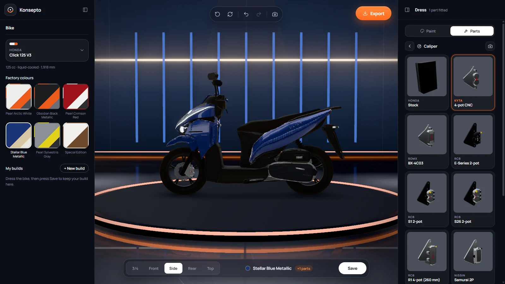</figure>
        <div class="copy">
          <span class="tag">03 · Showroom</span>
          <h3>Five views and a turntable.</h3>
          <p>Jump between 3/4, front, side, rear and top, or drag to orbit. Auto-spin turns the bike on the stage at up to 10× speed. Undo and redo cover every paint change.</p>
          <div class="chips"><span>3/4</span><span>Front</span><span>Side</span><span>Rear</span><span>Top</span><span>Auto-spin</span><span>Undo / redo</span></div>
        </div>
      </div>

      <div class="feature flip">
        <figure class="shot">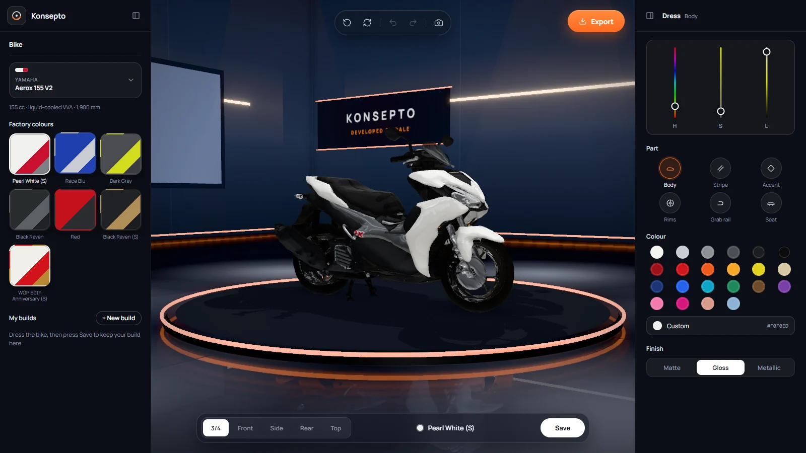</figure>
        <div class="copy">
          <span class="tag">04 · Garage</span>
          <h3>One garage, more bikes.</h3>
          <p>Switch from the Honda Click 125 V3 to the Yamaha Aerox 155 V2 from the bike menu. Each bike brings its own factory colours, and the garage reopens the last build you had on each one.</p>
          <div class="chips"><span>Honda Click 125 V3</span><span>Yamaha Aerox 155 V2</span></div>
        </div>
      </div>

      <div class="feature">
        <figure class="crop right">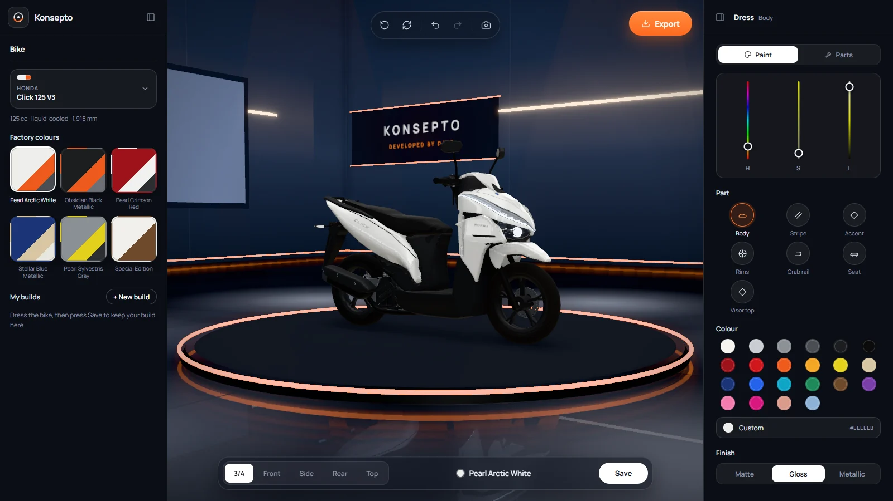</figure>
        <div class="copy">
          <span class="tag">05 · Save &amp; share</span>
          <h3>Keep the build. Post the picture.</h3>
          <p>Save a build to My builds and pick up where you left off. Copy a screenshot straight to the clipboard, or export a PNG named after the bike, the paint and the view.</p>
          <div class="chips"><span>My builds</span><span>Copy screenshot</span><span>Export PNG</span></div>
        </div>
      </div>
    </div>
  </section>

  <!-- THREE BUILDS -->
  <section class="block builds" aria-labelledby="builds-h">
    <div class="wrap">
      <div class="switch-head">
        <div>
          <div class="kicker"><span class="label">Same bike, three builds</span></div>
          <h2 class="h2" id="builds-h">Change it in a tap.</h2>
        </div>
        <div class="seg" role="tablist" aria-label="Build">
          <button type="button" role="tab" aria-selected="true" data-i="0"><i style="background:#9e121b"></i>Pearl Crimson Red</button>
          <button type="button" role="tab" aria-selected="false" data-i="1"><i style="background:#eeeeeb"></i>Pearl Arctic White</button>
          <button type="button" role="tab" aria-selected="false" data-i="2"><i style="background:#1b3577"></i>Stellar Blue</button>
        </div>
      </div>
      <div class="viewer" id="viewer">
        
        
        
      </div>
      <div class="viewer-cap"><span class="label" id="viewer-cap">Honda Click 125 V3 · Pearl Crimson Red · 3/4 view</span><span class="label">Real captures from the app</span></div>
    </div>
  </section>

  <!-- FLOW -->
  <section class="block" id="flow">
    <div class="wrap">
      <div class="kicker"><span class="label">User flow</span></div>
      <h2 class="h2">From stock to porma in five steps.</h2>
      <div class="flow">
        <div class="step"><span class="n">1</span><h4>Pick the bike</h4><p>Choose the Click or the Aerox from the bike menu.</p><code>Bike → Motorcycle</code></div>
        <div class="step"><span class="n">2</span><h4>Paint it</h4><p>Start from a factory colour, then recolour any panel.</p><code>Dress → Paint</code></div>
        <div class="step"><span class="n">3</span><h4>Fit parts</h4><p>Open a slot, look closer, tap a part to fit it.</p><code>Dress → Parts</code></div>
        <div class="step"><span class="n">4</span><h4>Save the build</h4><p>It joins My builds and reopens next time.</p><code>Save</code></div>
        <div class="step"><span class="n">5</span><h4>Share it</h4><p>Copy a screenshot or export a PNG for the group chat.</p><code>Export</code></div>
      </div>
    </div>
  </section>

  <!-- ACCURACY -->
  <section class="block accuracy" id="accuracy">
    <div class="wrap">
      <div class="kicker"><span class="label" style="color:#8d95a7">Built to the millimetre</span></div>
      <h2 class="h2">Measured from the real bike.</h2>
      <p class="lead" style="margin-top:22px">If a part looks right in Konsepto, it should look right on the street. So the Click was rebuilt from an owner's photos and Honda's spec sheet, not modelled by eye.</p>
      <div class="acc-grid">
        <figure class="acc-fig">
          <div class="shot"></div>
        </figure>
        <div>
          <div class="spec-table num">
            <div><span>Length × width × height</span><b>1,918 × 679 × 1,066 mm</b></div>
            <div><span>Wheelbase</span><b>1,280 mm</b></div>
            <div><span>Seat height</span><b>769 mm</b></div>
            <div><span>Ground clearance</span><b>131 mm</b></div>
            <div><span>Tyres front / rear</span><b>90/80-14 · 100/80-14</b></div>
          </div>
          <div class="method">
            <p>The side photo is straightened into a flat elevation where 1 pixel equals 1 millimetre, using the axles and tyre contact patches. Every panel outline is traced on that drawing, and the result is checked against the 131 mm ground clearance and 1,918 mm length.</p>
            <p>Stock parts on the right side, like the swing arm, muffler and radiator cover, are traced from the owner's own part photos.</p>
          </div>
        </div>
      </div>
    </div>
  </section>

  <!-- MOBILE -->
  <section class="block" id="mobile">
    <div class="wrap">
      <div class="two" style="margin-top:0; align-items:end">
        <div>
          <div class="kicker"><span class="label">Mobile</span></div>
          <h2 class="h2">The garage fits in your pocket.</h2>
        </div>
        <p class="lead">On a phone the side panels become sheets you pull up from the bottom bar. The bike stays in the middle of the screen, and the camera views and Save stay in reach of your thumb.</p>
      </div>
      <div class="phones" style="margin-top:72px">
        <div class="phone">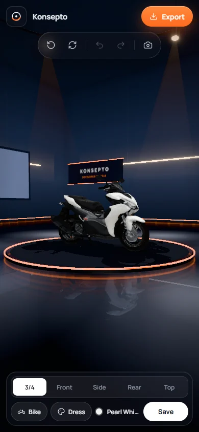</div>
        <div class="phone"></div>
      </div>
    </div>
  </section>

  <!-- UI KIT -->
  <section class="block" style="background: var(--paper-2)">
    <div class="wrap">
      <div class="kicker"><span class="label">Interface</span></div>
      <h2 class="h2">Dark stage, glass controls.</h2>
      <p class="lead" style="margin-top:22px">The UI stays dark and quiet so the paint reads true. Controls float on smoked glass, and orange marks only what you can press.</p>
      <div class="kit">
        <div>
          <h4>Colour</h4>
          <div class="sw"><span style="background:#06080d"></span><span style="background:#f1f3f7"></span><span style="background:#8d95a7"></span><span style="background:#ff6a1f"></span><span style="background:#4a4f5a"></span></div>
          <div class="sw-names num"><span>#06080D</span><span>#F1F3F7</span><span>#8D95A7</span><span>#FF6A1F</span><span>#4A4F5A</span></div>
        </div>
        <div>
          <h4>Type</h4>
          <div class="typeline">Manrope</div>
          <p class="label">400 · 500 · 600 · 700 — UI, labels, panels</p>
        </div>
        <div class="night-kit">
          <h4>Components</h4>
          <div class="pillbar"><span class="on">3/4</span><span>Front</span><span>Side</span><span>Rear</span><span>Top</span></div>
          <div class="btns"><span style="background:#ff6a1f;color:#140700">Export</span><span style="background:#f1f3f7;color:#06080d">Save</span><span style="border:1px solid rgba(255,255,255,.18)">+ New build</span></div>
          <span class="label">Pill radius 999 · Panel radius 18</span>
        </div>
      </div>
    </div>
  </section>

  <!-- NEXT -->
  <section class="block">
    <div class="wrap">
      <div class="kicker"><span class="label">What's next</span></div>
      <h2 class="h2">More bikes, more parts.</h2>
      <div class="next">
        <article><span class="label">Parts</span><h4>An Aerox parts catalogue</h4><p>The Aerox has its paints; its aftermarket parts come next, like the 26 slots on the Click.</p></article>
        <article><span class="label">Garage</span><h4>More PH scooters</h4><p>Each new bike gets the same treatment: real photos, the spec sheet, measured to the millimetre.</p></article>
        <article><span class="label">Sharing</span><h4>Builds worth posting</h4><p>Better ways to share a build with the barkada and the shop that will do the work.</p></article>
      </div>
    </div>
  </section>

  <section class="thanks">
    <div class="wrap">
      <h2>Salamat<span>.</span></h2>
      <div class="credits">
        <span class="mark"><i><svg width="18" height="18" viewBox="0 0 24 24" fill="none" aria-hidden="true"><circle cx="12" cy="12" r="8.5" stroke="#f1f3f7" stroke-width="1.7"/><circle cx="12" cy="12" r="2.2" fill="#f1f3f7"/><path d="M3.5 15.5C6 21 15 22 20.5 14" stroke="#ff6a1f" stroke-width="2.2" stroke-linecap="round"/></svg></i>Konsepto</span>
        <span class="label">Design &amp; development · Dale</span>
        <span class="label">Philippines · 2026</span>
      </div>
    </div>
  </section>
</main>

<script>
(function () {
  var caps = ['Honda Click 125 V3 · Pearl Crimson Red · 3/4 view', 'Honda Click 125 V3 · Pearl Arctic White · 3/4 view', 'Honda Click 125 V3 · Stellar Blue Metallic · panels hidden'];
  var imgs = document.querySelectorAll('#viewer img'), cap = document.getElementById('viewer-cap');
  var tabs = document.querySelectorAll('.seg button');
  tabs.forEach(function (b) {
    b.addEventListener('click', function () {
      var i = +b.getAttribute('data-i');
      tabs.forEach(function (t) { t.setAttribute('aria-selected', t === b ? 'true' : 'false'); });
      imgs.forEach(function (im, k) { if (k === i) im.removeAttribute('data-off'); else im.setAttribute('data-off', ''); });
      cap.textContent = caps[i];
    });
  });
})();
</script>
